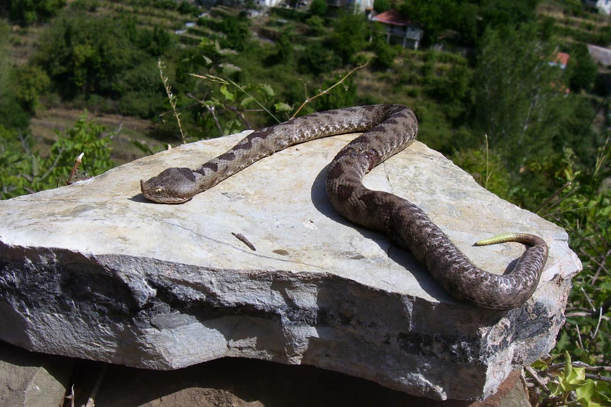
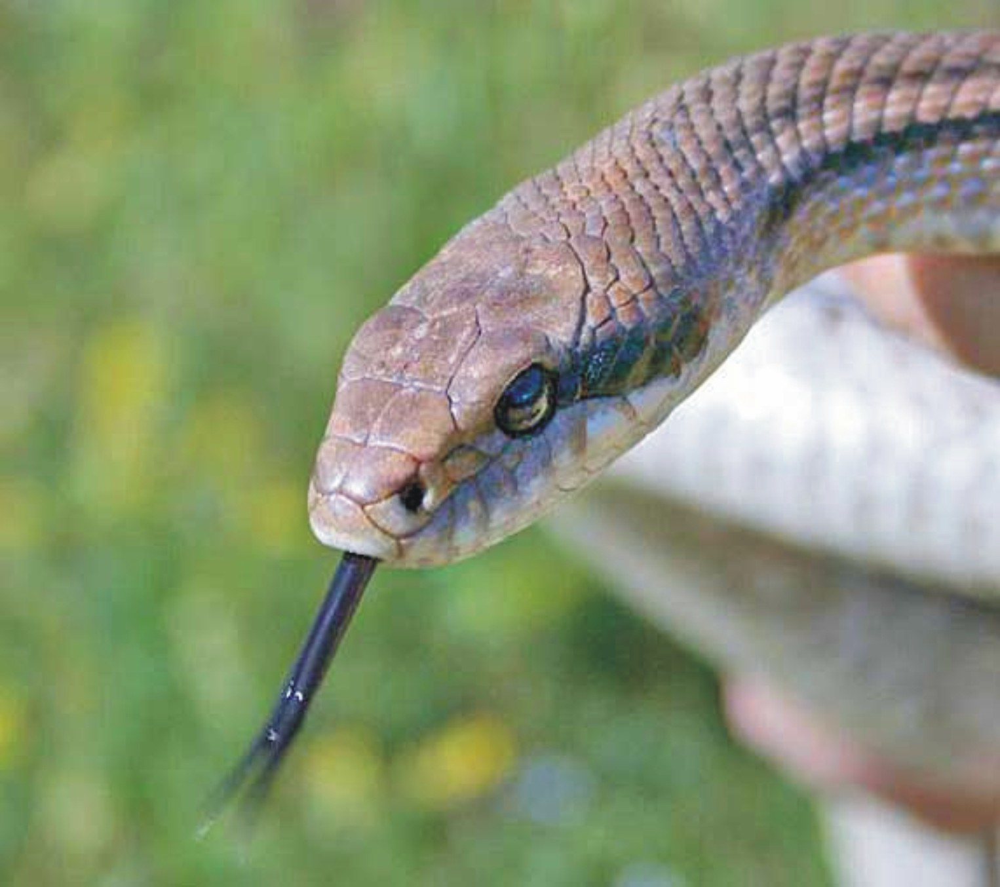
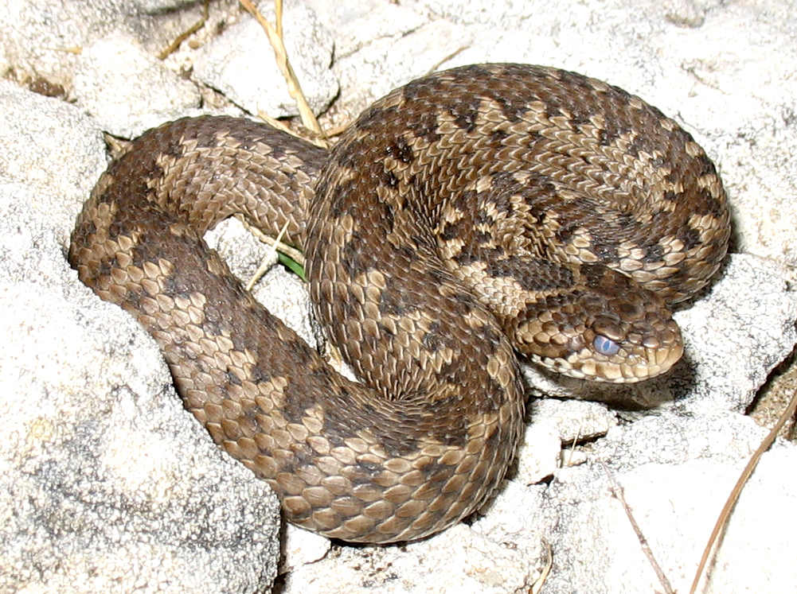

Οχιά
H οχιά είναι γένος ιοβόλων φιδιών, που ανήκουν στην οικογένεια Βιπερίδες και στην τάξη Λεπιδωτά. Πρόκειται για το μοναδικό ιοβόλο (και γι’ αυτό επικίνδυνο) φίδι στην Ελλάδα. Συχνάζει σε παλαιούς τοίχους, ακαλλιέργητα μέρη με κλαδιά και πέτρες, ενώ μερικές φορές βρίσκεται κοντά σε κατοικίες. Η γεωγραφική της εξάπλωση περιλαμβάνει όλα τα μέρη του κόσμου, εκτός από την Αυστραλία και τη Μαδαγασκάρη. Όλα τα είδη έχουν δόντια που συνδέονται με ιοβόλους αδένες. Σήμερα αναγνωρίζονται 4 υποοικογένειες.
Έχει μήκος 60 μέχρι 12ο εκ. Το σώμα της έχει λυλινδρικό σχήμα, σκεπάζεται από σκληρά λέπια και τελειώνει σε μια ουρά μυτερή. Το κεφάλι του, στενό μπροστά και πλατύ πίσω, σκεπάζεται από γυαλιστερά λέπια. Στο πάνω σαγόνι έχει δυο δόντια σαν αγκίστρια, που είναι κούφια στο εσωτερικό και στη βάση έχουν δηλητηριώδεις αδένες. Από εκεί χύνει το δηλητήριο στο σώμα των ζώων ή του ανθρώπου που δαγκώνει και προκαλεί τον θάνατο. Τρέφεται με διάφορα μικρά ζώα όπως ποντικούς, σαύρες, βατράχια, πουλιά κ.α.
Είναι πολύ επίκινδυνο και επίφοβο φίδι. Το δηλητήριο του είναι δραστικότατο. Το χειμώνα ναρκώνεται. Την άνοιξη το θηλυκό γεννά ζωντανά από αυγά που εκκολάπτονται μέσα στο σώμα του. Επειδή είναι νωθρή και δυσκίνητη η οχιά, δεν προσβάλλει τον άνθρωπο, εκτός αν την πειράξει ή τον φοβηθεί.
Το γνωστό είδος στην Ελλάδα είναι έχιδνα η αμμοδύτης, που πάνω στην άκρη του ρύγχους της διακρίνει κανείς ένα ξεφύτρωμα σαν κέρατο. Ο χρωματισμός της είναι γκριζωπός με πιο σκοτεινές ταινίες πάνω στα νώτα, και καστανοκίτρινος από κάτω, με μαυριδερές κηλίδες. Ζει κρυμμένη σε τόπους γυμνούς και πετρώδεις. Με τον παραμικρό ερεθισμό επιτίθεται εναντίον του ζώου και το δηλητηριάζει.
Η οχιά είναι το μεγαλύτερο και πιθανό το πιο δηλητηριώδες φίδι που βρίσκεται στην Ευρώπη. Το δηλητήριο είναι συνήθως αρκετά τοξικό. Έχει πρωτεολυτικά και νευροτοξικά συστατικά ενώ περιέχει και αιμοτοξίνες. Συμπτώματα, τυπικά ενός τσιμπήματος οχιάς, είναι πόνος, πρήξιμο και αλλαγή του χρώματος του δέρματος.
Τέλος να πούμε ότι η μεγάλη πλειοψηφία τν φιδιών στην Ελλάδα θανατώνεται χωρίς λόγο, αφού όλα τα άλλα είδη είναι εντελώς ακίνδυνα για το άνθρωπο και μόνο καλό κάνει η ύπαρξη τους. Ο φόβος όμως που επικρατεί γενικά για τα φίδια είναι αιτία για χιλιάδες θανάτους φιδιών χωρίς κανέναν λόγο.
Τα σημαντικότερα συμπτώματα που παρουσιάζονται εάν μας τσιμπήσει οχιά
- Πόνος στο 100% των περιστατικών, οίδημα που εμφανίζεται περίπου 20 λεπτά μετά το δάγκωμα και μπορεί να γενικευτεί αργά και εκχύμωση σε μεγάλο ποσοστό.
- Ναυτία, εμετός, υπόταση και λιποθυμία ή ζάλη αρκετά συχνά
- Συχνά ταχυκαρδία λόγω κυρίως πανικού, πυρετός και διόγκωση των επιχωρίων λεμφαδένων.
- Σπάνια Παραισθησίες, οίδημα βλεφάρων, θόλωση της όρασης και σπασμοί.
Τι πρέπει να κάνεις εάν σε τσιμπήσει οχιά
Το ιδανικό θα ήταν να δεις το φίδι και να αναγνωρίσεις αν είναι δηλητηριώδες ή όχι. Οπότε, αν δεν είναι δηλητηριώδες δεν κάνεις τίποτα. Επειδή όμως σπάνια θα δεις το φίδι και συνήθως δεν ξεχωρίζεις τα δηλητηριώδη από τα μη δηλητηριώδη καλό είναι να ακολουθήσεις τους ακόλουθους κανόνες πρώτων βοηθειών: Ακινητοποίησε αμέσως τον άρρωστο. Η ακινητοποίηση του αρρώστου μειώνει τις συσπάσεις των μυών και έτσι ελαττώνεται η προώθηση του δηλητηρίου στα αγγεία (αίματος και λέμφου).
Να δέσεις το άκρο με το δάγκωμα, σε σημείο πιο πάνω (κεντρικά προς το σώμα), έτσι που να περιοριστεί η ροή του αίματος μέσα στις φλέβες. Οι φλέβες μεταφέρουν το αίμα από τα διάφορα όργανα προς την καρδιά. ΠΡΟΣΟΧΗ μην το δέσεις πολύ σφικτά. Το αίμα πρέπει να κυκλοφορεί μέσα στις αρτηρίες, διαφορετικά δεν θα μεταφέρεται οξυγόνο στην περιοχή του τσιμπήματος και η κατάσταση θα επιδεινωθεί.
Μην τοποθετήσεις πάγο στο σημείο του δαγκώματος. Μπορεί να προκαλέσεις μεγαλύτερη ζημιά. Μη χάνεις χρόνο για να σκίσεις με το μαχαίρι την περιοχή και να ρουφήξεις το δηλητήριο. Δεν έχει αποδειχθεί ότι βοηθά. Καλύτερα μετέφερε το θύμα στο πιο κοντινό νοσοκομείο.
 |
 |